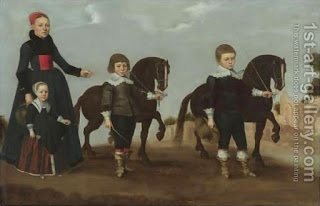

Nedarim 36 - Sorry, I cannot teach you Torah
One who vowed not to provide any benefit to his fellow is not allowed to teach him Torah; however, he is allowed to teach him the moral lessons and stories about the Torah (Midrash), as well as teach Torah to his sons and daughters.
Basically, why should Torah be taught for free? Moses said, " Look, I taught you the Torah, for free, just as God commanded me ," - and you should also teach for free. Then if so, why is teaching Torah considered a benefit, which one should not confer on his fellow if he vowed against him? - We mean teaching the written Torah, and there one takes money for teaching the melody, not the words. Alternatively, the art of reading the written Torah is usually taught to small children, and one receives money for being their babysitter rather than teacher. Moral lesson are for adults though, and there one cannot take the reward.
Note that the rule says that one can teach to the fellow's sons and daughter. This rule is the source for the view that Torah should be taught to women as well as men.
Art: A Lady With Her Daughter And Two Sons by Dutch School